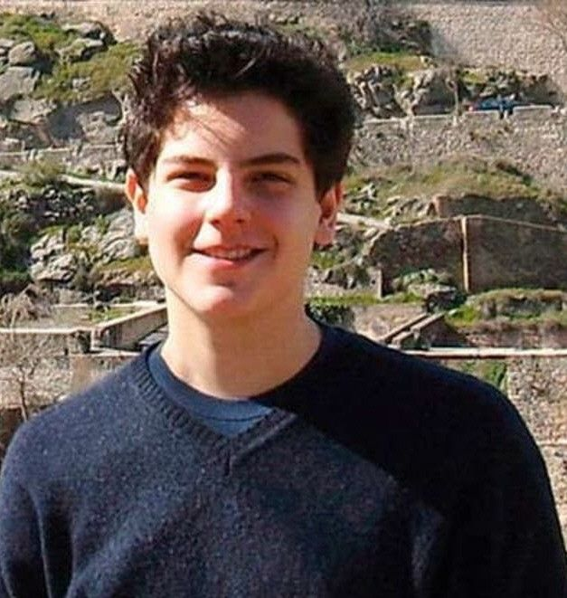

Imagen

2005: Sacramento
En septiembre de 2005, Carlo inicia el bachillerato en el Instituto León XIII, dirigido por los padres jesuitas. Durante estos años, se destaca no solo por su rendimiento académico, sino también por su interés en profundizar en la fe y en ayudar a los demás. En este período comienza a combinar su pasión por la informática con su amor por la Eucaristía, desarrollando proyectos que luego lo acercarán a compartir su fe de manera innovadora. Además, mantiene su carácter amable y solidario, ganándose la estima de compañeros y profesores por su generosidad y compromiso con los valores cristianos.